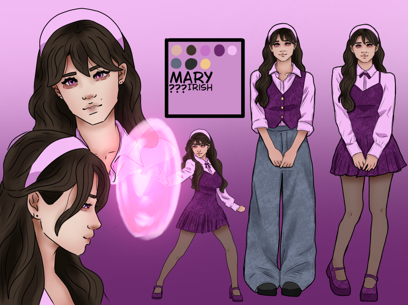

Character Profile · Book 1
Mary.
An original character in the world of my manga.

Character reference
About Mary
Mary's character profile is still being developed. More details about her personality, background, and role in the story will be added here.
Character Details
First Appears
Book 1
Character Type
Original character
Abilities
To be added
Affiliation
To be added
Reference Sheet
Mary's character reference sheet, showing her design and details.

Artwork & Gallery
More drawings, expressions, outfits, and character references for Mary will be added as the collection grows.